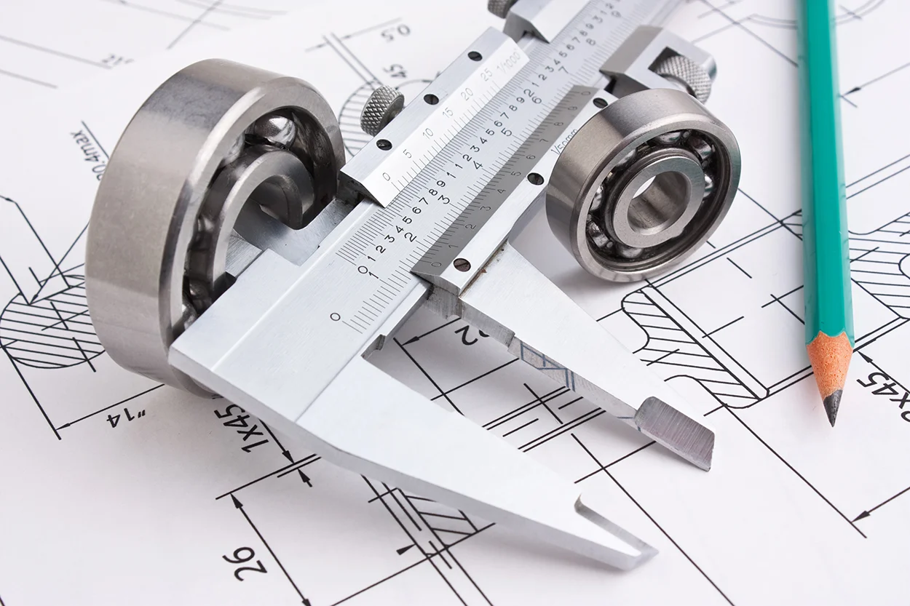

Service & reparationer
Från droppande kran till nytt badrum. Hjälp med det som ska fungera varje dag.
Läs om service & reparationerFrån enstaka reparationer till kompletta installationer. Här hittar du rätt ingång för ditt behov.
Från droppande kran till nytt badrum. Hjälp med det som ska fungera varje dag.
Läs om service & reparationer
Rätt inomhusklimat börjar med rätt lösning för huset och människorna i det.
Läs om värmepumpar & kyla
Projektering och installation vid nybyggnad, ombyggnad och större renoveringar.
Läs om entreprenadSolenergi, batterilagring och laddning genom Sture Andersson Energi AB.
Läs om solceller & energiEn reparation, en ny värmepump eller ett större projekt? Berätta vad du vill få gjort, så tar vi nästa steg tillsammans.